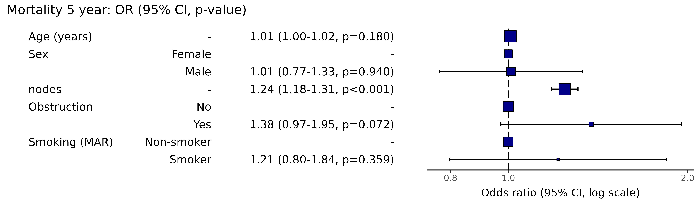

As a journal editor, I often receive studies in which the investigators fail to describe, analyse, or even acknowledge missing data. This is frustrating, as it is often of the utmost importance. Conclusions may (and do) change when missing data is accounted for. A few seem to not even appreciate that in conventional regression, only rows with complete data are included.
These are the five steps to ensuring missing data are correctly identified and appropriately dealt with:
- Ensure your data are coded correctly.
- Identify missing values within each variable.
- Look for patterns of missingness.
- Check for associations between missing and observed data.
- Decide how to handle missing data.
finalfit includes a number of functions to help with this.
Some confusing terminology
But first there are some terms which easy to mix up. These are important as they describe the mechanism of missingness and this determines how you can handle the missing data.
Missing completely at random (MCAR)
As it says, values are randomly missing from your dataset. Missing data values do not relate to any other data in the dataset and there is no pattern to the actual values of the missing data themselves.
For instance, when smoking status is not recorded in a random subset of patients.
This is easy to handle, but unfortunately, data are almost never missing completely at random.
Missing at random (MAR)
This is confusing and would be better stated as missing conditionally at random. Here, missing data do have a relationship with other variables in the dataset. However, the actual values that are missing are random.
For example, smoking status is not documented in female patients because the doctor was too shy to ask. Yes ok, not that realistic!
Missing not at random (MNAR)
The pattern of missingness is related to other variables in the dataset, but in addition, the values of the missing data are not random.
For example, when smoking status is not recorded in patients admitted as an emergency, who are also more likely to have worse outcomes from surgery.
Missing not at random data are important, can alter your conclusions, and are the most difficult to diagnose and handle. They can only be detected by collecting and examining some of the missing data. This is often difficult or impossible to do.
How you deal with missing data is dependent on the type of missingness. Once you know this, then you can sort it.
1. Ensure your data are coded correctly: ff_glimpse
While clearly obvious, this step is often ignored in the rush to get results. The first step in any analysis is robust data cleaning and coding. Lots of packages have a glimpse-type function and finalfit is no different. This function has three specific goals:
- Ensure all factors and numerics are correctly assigned. That is the commonest reason to get an error with a finalfit function. You think you’re using a factor variable, but in fact it is incorrectly coded as a continuous numeric.
- Ensure you know which variables have missing data. This presumes missing values are correctly assigned NA. See here for more details if you are unsure.
- Ensure factor levels and variable labels are assigned correctly.
Example scenario
Using the colon_s cancer dataset that comes with finalfit, we are interested in exploring the association between a cancer obstructing the bowel and 5-year survival, accounting for other patient and disease characteristics.
For demonstration purposes, we will create random MCAR and MAR smoking variables to the dataset.
# Make sure finalfit is up-to-date
install.packages("finalfit")library(finalfit)
# Create some extra missing data
## Smoking missing completely at random
set.seed(1)
colon_s$smoking_mcar =
sample(c("Smoker", "Non-smoker", NA),
dim(colon_s)[1], replace=TRUE,
prob = c(0.2, 0.7, 0.1)) %>%
factor() %>%
ff_label("Smoking (MCAR)")
## Smoking missing conditional on patient sex
colon_s$smoking_mar[colon_s$sex.factor == "Female"] =
sample(c("Smoker", "Non-smoker", NA),
sum(colon_s$sex.factor == "Female"),
replace = TRUE,
prob = c(0.1, 0.5, 0.4))
colon_s$smoking_mar[colon_s$sex.factor == "Male"] =
sample(c("Smoker", "Non-smoker", NA),
sum(colon_s$sex.factor == "Male"),
replace=TRUE, prob = c(0.15, 0.75, 0.1))
colon_s$smoking_mar = factor(colon_s$smoking_mar) %>%
ff_label("Smoking (MAR)")
# Examine with ff_glimpse
explanatory = c("age", "sex.factor",
"nodes", "obstruct.factor",
"smoking_mcar", "smoking_mar")
dependent = "mort_5yr"
colon_s %>%
ff_glimpse(dependent, explanatory)
#> $Continuous
#> label var_type n missing_n missing_percent mean sd min
#> age Age (years) <dbl> 929 0 0.0 59.8 11.9 18.0
#> nodes nodes <dbl> 911 18 1.9 3.7 3.6 0.0
#> quartile_25 median quartile_75 max
#> age 53.0 61.0 69.0 85.0
#> nodes 1.0 2.0 5.0 33.0
#>
#> $Categorical
#> label var_type n missing_n missing_percent
#> mort_5yr Mortality 5 year <fct> 915 14 1.5
#> sex.factor Sex <fct> 929 0 0.0
#> obstruct.factor Obstruction <fct> 908 21 2.3
#> smoking_mcar Smoking (MCAR) <fct> 828 101 10.9
#> smoking_mar Smoking (MAR) <fct> 719 210 22.6
#> levels_n levels levels_count
#> mort_5yr 2 "Alive", "Died", "(Missing)" 511, 404, 14
#> sex.factor 2 "Female", "Male" 445, 484
#> obstruct.factor 2 "No", "Yes", "(Missing)" 732, 176, 21
#> smoking_mcar 2 "Non-smoker", "Smoker", "(Missing)" 645, 183, 101
#> smoking_mar 2 "Non-smoker", "Smoker", "(Missing)" 591, 128, 210
#> levels_percent
#> mort_5yr 55.0, 43.5, 1.5
#> sex.factor 48, 52
#> obstruct.factor 78.8, 18.9, 2.3
#> smoking_mcar 69, 20, 11
#> smoking_mar 64, 14, 23The function summarises a data frame or tibble by numeric (continuous) variables and factor (discrete) variables. The dependent and explanatory are for convenience. Pass either or neither e.g. to summarise data frame or tibble:
colon_s %>%
ff_glimpse()It doesn’t present well if you have factors with lots of levels, so you may want to remove these.
library(dplyr)
colon_s %>%
select(-hospital) %>%
ff_glimpse()Use this to check that the variables are all assigned and behaving as expected. The proportion of missing data can be seen, e.g. smoking_mar has 23% missing data.
2. Identify missing values in each variable: missing_plot
In detecting patterns of missingness, this plot is useful. Row number is on the x-axis and all included variables are on the y-axis. Associations between missingness and observations can be easily seen, as can relationships of missingness between variables.
colon_s %>%
missing_plot()
It was only when writing this post that I discovered the amazing package, naniar. This package is recommended and provides lots of great visualisations for missing data.
3. Look for patterns of missingness: missing_pattern
missing_pattern simply wraps mice::md.pattern using finalfit grammar. This produces a table and a plot showing the pattern of missingness between variables.
explanatory = c("age", "sex.factor",
"obstruct.factor",
"smoking_mcar", "smoking_mar")
dependent = "mort_5yr"
colon_s %>%
missing_pattern(dependent, explanatory)
#> age sex.factor mort_5yr obstruct.factor smoking_mcar smoking_mar
#> 617 1 1 1 1 1 1 0
#> 181 1 1 1 1 1 0 1
#> 74 1 1 1 1 0 1 1
#> 22 1 1 1 1 0 0 2
#> 16 1 1 1 0 1 1 1
#> 2 1 1 1 0 1 0 2
#> 2 1 1 1 0 0 1 2
#> 1 1 1 1 0 0 0 3
#> 8 1 1 0 1 1 1 1
#> 4 1 1 0 1 1 0 2
#> 2 1 1 0 1 0 1 2
#> 0 0 14 21 101 210 346This allows us to look for patterns of missingness between variables. There are 14 patterns in this data. The number and pattern of missingness help us to determine the likelihood of it being random rather than systematic.
Make sure you include missing data in demographics tables
Table 1 in a healthcare study is often a demographics table of an “explanatory variable of interest” against other explanatory variables/confounders. Do not silently drop missing values in this table. It is easy to do this correctly with summary_factorlist. This function provides a useful summary of a dependent variable against explanatory variables. Despite its name, continuous variables are handled nicely.
na_include=TRUE ensures missing data from the explanatory variables (but not dependent) are included. Note that any p-values are generated across missing groups as well, so run a second time with na_include=FALSE if you wish a hypothesis test only over observed data.
# Explanatory or confounding variables
explanatory = c("age", "sex.factor",
"nodes",
"smoking_mcar", "smoking_mar")
# Explanatory variable of interest
dependent = "obstruct.factor" # Bowel obstruction
colon_s %>%
summary_factorlist(dependent, explanatory,
na_include=TRUE, p=TRUE)
#> Note: dependent includes missing data. These are dropped.
#> label levels No Yes p
#> Age (years) Mean (SD) 60.2 (11.5) 57.3 (13.3) 0.004
#> Sex Female 346 (47.3) 91 (51.7) 0.330
#> Male 386 (52.7) 85 (48.3)
#> nodes Mean (SD) 3.7 (3.7) 3.5 (3.2) 0.435
#> Smoking (MCAR) Non-smoker 500 (68.3) 130 (73.9) 0.080
#> Smoker 154 (21.0) 26 (14.8)
#> (Missing) 78 (10.7) 20 (11.4)
#> Smoking (MAR) Non-smoker 467 (63.8) 110 (62.5) 0.077
#> Smoker 91 (12.4) 33 (18.8)
#> (Missing) 174 (23.8) 33 (18.8)
4. Check for associations between missing and observed data: missing_pairs | missing_compare
In deciding whether data is MCAR or MAR, one approach is to explore patterns of missingness between levels of included variables. This is particularly important (I would say absolutely required) for a primary outcome measure / dependent variable.
Take for example “death”. When that outcome is missing it is often for a particular reason. For example, perhaps patients undergoing emergency surgery were less likely to have complete records compared with those undergoing planned surgery. And of course, death is more likely after emergency surgery.
missing_pairs uses functions from the excellent GGally package. It produces pairs plots to show relationships between missing values and observed values in all variables.
explanatory = c("age", "sex.factor",
"nodes", "obstruct.factor",
"smoking_mcar", "smoking_mar")
dependent = "mort_5yr"
colon_s %>%
missing_pairs(dependent, explanatory)
For continuous variables (age and nodes), the distributions of observed and missing data can be visually compared. Is there a difference between age and mortality above?
For discrete, data, counts are presented by default. It is often easier to compare proportions:
colon_s %>%
missing_pairs(dependent, explanatory, position = "fill", )
It should be obvious that missingness in Smoking (MCAR) does not relate to sex (row 6, column 3). But missingness in Smoking (MAR) does differ by sex (last row, column 3) as was designed above when the missing data were created.
We can confirm this using missing_compare.
explanatory = c("age", "sex.factor",
"nodes", "obstruct.factor")
dependent = "smoking_mcar"
colon_s %>%
missing_compare(dependent, explanatory) %>%
knitr::kable(row.names=FALSE, align = c("l", "l", "r", "r", "r")) # Omit when you run| Missing data analysis: Smoking (MCAR) | Not missing | Missing | p | |
|---|---|---|---|---|
| Age (years) | Mean (SD) | 59.7 (11.9) | 59.9 (12.6) | 0.882 |
| Sex | Female | 399 (89.7) | 46 (10.3) | 0.692 |
| Male | 429 (88.6) | 55 (11.4) | ||
| nodes | Mean (SD) | 3.6 (3.4) | 4.0 (4.5) | 0.302 |
| Obstruction | No | 654 (89.3) | 78 (10.7) | 0.891 |
| Yes | 156 (88.6) | 20 (11.4) |
dependent = "smoking_mar"
colon_s %>%
missing_compare(dependent, explanatory) %>%
knitr::kable(row.names=FALSE, align = c("l", "l", "r", "r", "r")) # Omit when you run| Missing data analysis: Smoking (MAR) | Not missing | Missing | p | |
|---|---|---|---|---|
| Age (years) | Mean (SD) | 59.6 (11.9) | 60.1 (12.0) | 0.597 |
| Sex | Female | 288 (64.7) | 157 (35.3) | <0.001 |
| Male | 431 (89.0) | 53 (11.0) | ||
| nodes | Mean (SD) | 3.6 (3.6) | 3.8 (3.6) | 0.645 |
| Obstruction | No | 558 (76.2) | 174 (23.8) | 0.185 |
| Yes | 143 (81.2) | 33 (18.8) |
It takes dependent and explanatory variables, but in this context dependent just refers to the variable being tested for missingness against the explanatory variables.
Comparisons for continuous data use a Kruskal Wallis and for discrete data a chi-squared test.
As expected, a relationship is seen between Sex and Smoking (MAR) but not Smoking (MCAR).
For those who like an omnibus test
If you are work predominately with numeric rather than discrete data (categorical/factors), you may find these tests from the MissMech package useful. The package and output is well documented, and provides two tests which can be used to determine whether data are MCAR.
5. Decide how to handle missing data
These pages from Karen Grace-Martin are great for this.
Prior to a standard regression analysis, we can either:
- Delete the variable with the missing data
- Delete the cases with the missing data
- Impute (fill in) the missing data
- Model the missing data
MCAR, MAR, or MNAR
MCAR vs MAR
Using the examples, we identify that Smoking (MCAR) is missing completely at random.
We know nothing about the missing values themselves, but we know of no plausible reason that the values of the missing data, for say, people who died should be different to the values of the missing data for those who survived. The pattern of missingness is therefore not felt to be MNAR.
Common solution
Depending on the number of data points that are missing, we may have sufficient power with complete cases to examine the relationships of interest.
We therefore elect to simply omit the patients in whom smoking is missing. This is known as list-wise deletion and will be performed by default in standard regression analyses including finalfit.
explanatory = c("age", "sex.factor",
"nodes", "obstruct.factor",
"smoking_mcar")
dependent = "mort_5yr"
colon_s %>%
finalfit(dependent, explanatory) %>%
knitr::kable(row.names=FALSE, align = c("l", "l", "r", "r", "r", "r")) # Omit when you run
#> Note: dependent includes missing data. These are dropped.
#> Waiting for profiling to be done...
#> Waiting for profiling to be done...
#> Waiting for profiling to be done...
#> Waiting for profiling to be done...
#> Waiting for profiling to be done...
#> Waiting for profiling to be done...| Dependent: Mortality 5 year | Alive | Died | OR (univariable) | OR (multivariable) | |
|---|---|---|---|---|---|
| Age (years) | Mean (SD) | 59.8 (11.4) | 59.9 (12.5) | 1.00 (0.99-1.01, p=0.986) | 1.01 (1.00-1.02, p=0.200) |
| Sex | Female | 243 (55.6) | 194 (44.4) | - | - |
| Male | 268 (56.1) | 210 (43.9) | 0.98 (0.76-1.27, p=0.889) | 1.02 (0.76-1.38, p=0.872) | |
| nodes | Mean (SD) | 2.7 (2.4) | 4.9 (4.4) | 1.24 (1.18-1.30, p<0.001) | 1.25 (1.18-1.33, p<0.001) |
| Obstruction | No | 408 (56.7) | 312 (43.3) | - | - |
| Yes | 89 (51.1) | 85 (48.9) | 1.25 (0.90-1.74, p=0.189) | 1.53 (1.05-2.22, p=0.027) | |
| Smoking (MCAR) | Non-smoker | 358 (56.4) | 277 (43.6) | - | - |
| Smoker | 90 (49.7) | 91 (50.3) | 1.31 (0.94-1.82, p=0.113) | 1.37 (0.96-1.96, p=0.083) |
Other considerations
- Sensitivity analysis
- Omit the variable
- Imputation
- Model the missing data
If the variable in question is thought to be particularly important, you may wish to perform a sensitivity analysis. A sensitivity analysis in this context aims to capture the effect of uncertainty on the conclusions drawn from the model. Thus, you may choose to re-label all missing smoking values as “smoker”, and see if that changes the conclusions of your analysis. The same procedure can be performed labeling with “non-smoker”.
If smoking is not associated with the explanatory variable of interest (bowel obstruction) or the outcome, it may be considered not to be a confounder and so could be omitted. That neatly deals with the missing data issue, but of course may not be appropriate.
Imputation and modelling are considered below.
MCAR vs MAR
But life is rarely that simple.
Consider that the smoking variable is more likely to be missing if the patient is female (missing_compareshows a relationship). But, say, that the missing values are not different from the observed values. Missingness is then MAR.
If we simply drop all the cases (patients) in which smoking is missing (list-wise deletion), then proportionally we drop more females than men. This may have consequences for our conclusions if sex is associated with our explanatory variable of interest or outcome.
Common solution
mice is our go to package for multiple imputation. That’s the process of filling in missing data using a best-estimate from all the other data that exists. When first encountered, this may not sound like a good idea.
However, taking our simple example, if missingness in smoking is predicted strongly by sex (and other observed variables), and the values of the missing data are random, then we can impute (best-guess) the missing smoking values using sex and other variables in the dataset.
Imputation is not usually appropriate for the explanatory variable of interest or the outcome variable. In both case, the hypothesis is that there is an meaningful association with other variables in the dataset, therefore it doesn’t make sense to use these variables to impute them.
Here is some code to run mice. The package is well documented, and there are a number of checks and considerations that should be made to inform the imputation process. Read the documentation carefully prior to doing this yourself.
Note also finalfit::missing_predictorMatrix(). This provides an easy way to include or exclude variables to be imputed or to be used for imputation.
# Multivariate Imputation by Chained Equations (mice)
library(finalfit)
library(dplyr)
library(mice)
explanatory = c("age", "sex.factor",
"nodes", "obstruct.factor", "smoking_mar")
dependent = "mort_5yr"
# Choose not to impute missing values
# for explanatory variable of interest and
# outcome variable.
# But include in algorithm for imputation.
colon_s %>%
select(dependent, explanatory) %>%
missing_predictorMatrix(
drop_from_imputed = c("obstruct.factor", "mort_5yr")
) -> predM
fits = colon_s %>%
select(dependent, explanatory) %>%
# Usually run imputation with 10 imputed sets, 4 here for demonstration
mice(m = 4, predictorMatrix = predM) %>%
# Run logistic regression on each imputed set
with(glm(formula(ff_formula(dependent, explanatory)),
family="binomial"))
#>
#> iter imp variable
#> 1 1 mort_5yr nodes obstruct.factor smoking_mar
#> 1 2 mort_5yr nodes obstruct.factor smoking_mar
#> 1 3 mort_5yr nodes obstruct.factor smoking_mar
#> 1 4 mort_5yr nodes obstruct.factor smoking_mar
#> 2 1 mort_5yr nodes obstruct.factor smoking_mar
#> 2 2 mort_5yr nodes obstruct.factor smoking_mar
#> 2 3 mort_5yr nodes obstruct.factor smoking_mar
#> 2 4 mort_5yr nodes obstruct.factor smoking_mar
#> 3 1 mort_5yr nodes obstruct.factor smoking_mar
#> 3 2 mort_5yr nodes obstruct.factor smoking_mar
#> 3 3 mort_5yr nodes obstruct.factor smoking_mar
#> 3 4 mort_5yr nodes obstruct.factor smoking_mar
#> 4 1 mort_5yr nodes obstruct.factor smoking_mar
#> 4 2 mort_5yr nodes obstruct.factor smoking_mar
#> 4 3 mort_5yr nodes obstruct.factor smoking_mar
#> 4 4 mort_5yr nodes obstruct.factor smoking_mar
#> 5 1 mort_5yr nodes obstruct.factor smoking_mar
#> 5 2 mort_5yr nodes obstruct.factor smoking_mar
#> 5 3 mort_5yr nodes obstruct.factor smoking_mar
#> 5 4 mort_5yr nodes obstruct.factor smoking_mar
# Examples of extracting metrics from fits
## AICs
fits %>%
getfit() %>%
purrr::map(AIC)
#> [[1]]
#> [1] 1191.789
#>
#> [[2]]
#> [1] 1199.745
#>
#> [[3]]
#> [1] 1195.581
#>
#> [[4]]
#> [1] 1188.155
# C-statistic
fits %>%
getfit() %>%
purrr::map(~ pROC::roc(.x$y, .x$fitted)$auc)
#> [[1]]
#> Area under the curve: 0.6822
#>
#> [[2]]
#> Area under the curve: 0.6761
#>
#> [[3]]
#> Area under the curve: 0.6779
#>
#> [[4]]
#> Area under the curve: 0.6865
# Pool results
fits_pool = fits %>%
pool()
## Can be passed to or_plot
colon_s %>%
or_plot(dependent, explanatory, glmfit = fits_pool, table_text_size=4)
# Summarise and put in table
fit_imputed = fits_pool %>%
fit2df(estimate_name = "OR (multiple imputation)", exp = TRUE)
# Use finalfit merge methods to create and compare results
colon_s %>%
summary_factorlist(dependent, explanatory, fit_id = TRUE) -> summary1
colon_s %>%
glmuni(dependent, explanatory) %>%
fit2df(estimate_suffix = " (univariable)") -> fit_uni
colon_s %>%
glmmulti(dependent, explanatory) %>%
fit2df(estimate_suffix = " (multivariable inc. smoking)") -> fit_multi
explanatory = c("age", "sex.factor",
"nodes", "obstruct.factor")
colon_s %>%
glmmulti(dependent, explanatory) %>%
fit2df(estimate_suffix = " (multivariable)") -> fit_multi_r
# Combine to final table
summary1 %>%
ff_merge(fit_uni) %>%
ff_merge(fit_multi_r) %>%
ff_merge(fit_multi) %>%
ff_merge(fit_imputed) %>%
select(-fit_id, -index) %>%
knitr::kable(row.names=FALSE, align = c("l", "l", "r", "r", "r","r", "r", "r"))| label | levels | Alive | Died | OR (univariable) | OR (multivariable) | OR (multivariable inc. smoking) | OR (multiple imputation) |
|---|---|---|---|---|---|---|---|
| Age (years) | Mean (SD) | 59.8 (11.4) | 59.9 (12.5) | 1.00 (0.99-1.01, p=0.986) | 1.01 (1.00-1.02, p=0.122) | 1.02 (1.00-1.03, p=0.010) | 1.01 (1.00-1.02, p=0.235) |
| Sex | Female | 243 (47.6) | 194 (48.0) | - | - | - | - |
| Male | 268 (52.4) | 210 (52.0) | 0.98 (0.76-1.27, p=0.889) | 0.98 (0.74-1.30, p=0.890) | 0.88 (0.64-1.23, p=0.461) | 1.01 (0.77-1.32, p=0.960) | |
| nodes | Mean (SD) | 2.7 (2.4) | 4.9 (4.4) | 1.24 (1.18-1.30, p<0.001) | 1.25 (1.19-1.32, p<0.001) | 1.25 (1.18-1.33, p<0.001) | 1.24 (1.18-1.30, p<0.001) |
| Obstruction | No | 408 (82.1) | 312 (78.6) | - | - | - | - |
| Yes | 89 (17.9) | 85 (21.4) | 1.25 (0.90-1.74, p=0.189) | 1.36 (0.95-1.93, p=0.089) | 1.26 (0.85-1.88, p=0.252) | 1.33 (0.92-1.92, p=0.124) | |
| Smoking (MAR) | Non-smoker | 328 (82.8) | 254 (81.2) | - | - | - | - |
| Smoker | 68 (17.2) | 59 (18.8) | 1.12 (0.76-1.65, p=0.563) | - | 1.25 (0.82-1.89, p=0.300) | 1.23 (0.77-1.96, p=0.364) |
The final table can easily be exported to Word or as a PDF as described in the “Export” vignette.
By examining the coefficients, the effect of the imputation compared with the complete case analysis can be clearly seen.
Other considerations
- Omit the variable
- Imputing factors with new level for missing data
- Model the missing data
As above, if the variable does not appear to be important, it may be omitted from the analysis. A sensitivity analysis in this context is another form of imputation. But rather than using all other available information to best-guess the missing data, we simply assign the value as above. Imputation is therefore likely to be more appropriate.
There is an alternative method to model the missing data for the categorical in this setting – just consider the missing data as a factor level. This has the advantage of simplicity, with the disadvantage of increasing the number of terms in the model. Multiple imputation is generally preferred.
library(dplyr)
explanatory = c("age", "sex.factor",
"nodes", "obstruct.factor", "smoking_mar")
colon_s %>%
mutate(
smoking_mar = forcats::fct_explicit_na(smoking_mar)
) %>%
finalfit(dependent, explanatory) %>%
knitr::kable(row.names=FALSE, align = c("l", "l", "r", "r", "r", "r"))| Dependent: Mortality 5 year | Alive | Died | OR (univariable) | OR (multivariable) | |
|---|---|---|---|---|---|
| Age (years) | Mean (SD) | 59.8 (11.4) | 59.9 (12.5) | 1.00 (0.99-1.01, p=0.986) | 1.01 (1.00-1.02, p=0.119) |
| Sex | Female | 243 (55.6) | 194 (44.4) | - | - |
| Male | 268 (56.1) | 210 (43.9) | 0.98 (0.76-1.27, p=0.889) | 0.96 (0.72-1.30, p=0.809) | |
| nodes | Mean (SD) | 2.7 (2.4) | 4.9 (4.4) | 1.24 (1.18-1.30, p<0.001) | 1.25 (1.19-1.32, p<0.001) |
| Obstruction | No | 408 (56.7) | 312 (43.3) | - | - |
| Yes | 89 (51.1) | 85 (48.9) | 1.25 (0.90-1.74, p=0.189) | 1.34 (0.94-1.91, p=0.102) | |
| Smoking (MAR) | Non-smoker | 328 (56.4) | 254 (43.6) | - | - |
| Smoker | 68 (53.5) | 59 (46.5) | 1.12 (0.76-1.65, p=0.563) | 1.24 (0.82-1.88, p=0.308) | |
| (Missing) | 115 (55.8) | 91 (44.2) | 1.02 (0.74-1.41, p=0.895) | 0.99 (0.69-1.41, p=0.943) |
MNAR vs MAR
Missing not at random data is tough in healthcare. To determine if data are MNAR for definite, we need to know their value in a subset of observations (patients).
Using our example above. Say smoking status is poorly recorded in patients admitted to hospital as an emergency with an obstructing cancer. Obstructing bowel cancers may be larger or their position may make the prognosis worse. Smoking may relate to the aggressiveness of the cancer and may be an independent predictor of prognosis. The missing values for smoking may therefore not be random. Smoking may be more common in the emergency patients and may be more common in those that die.
There is no easy way to handle this. If at all possible, try to get the missing data. Otherwise, take care when drawing conclusions from analyses where data are thought to be missing not at random.
Where to next
We are now doing more in Stan. Missing data can be imputed directly within a Stan model which feels neat. Stan doesn’t yet have the equivalent of NA which makes passing the data block into Stan a bit of a faff.
Alternatively, the missing data can be directly modelled in Stan. Examples are provided in the manual. Again, I haven’t found this that easy to do, but there are a number of Stan developments that will hopefully make this more straightforward in the future.